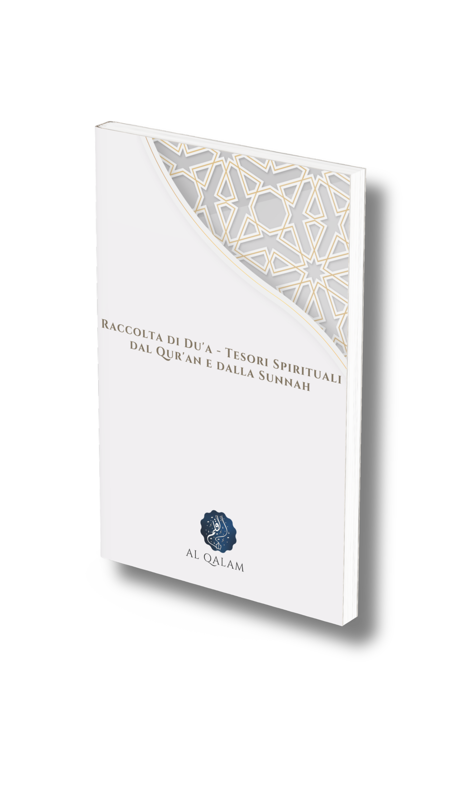

Al Qalam - la nostra missione
Al Qalam si impegna a fornire risorse e strumenti alla comunità musulmana per approfondire la comprensione dell’Islam e rafforzare il legame spirituale con Allah ﷻ.
L’obiettivo è offrire informazioni, saggezze e risorse interattive per facilitare la crescita spirituale e la comprensione dell’Islam.
Il libro "Raccolta di du'a - tesori spirituali dal Qur'an e la sunnah" nasce con l’obiettivo di offrire ai lettori
una guida pratica e completa per comprendere e
recitare i du’a, le suppliche raccomandate dal Qur’an
e tramandate dal Profeta Muhammad ﷺ.
